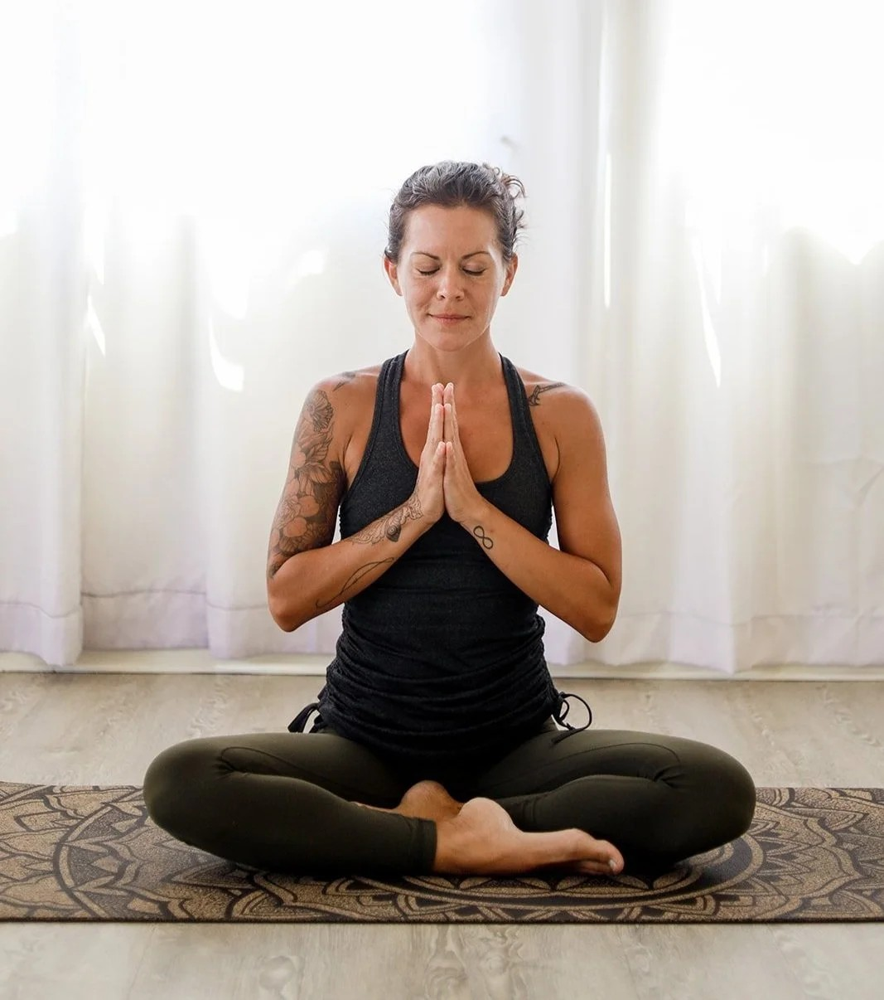

Breathing Practices
Breathing is the foundation of yoga, connecting body and mind. Known as pranayama, these techniques help regulate energy, calm the nervous system, and improve focus. Beginners can start with belly breathing: inhale deeply through the nose, expanding the stomach, then exhale slowly through the mouth. Another gentle practice is alternate nostril breathing, which balances both sides of the body and mind. At Beginner Yoga Hub, every class includes a few minutes of guided breathwork, making it easy to learn gradually. Breath awareness also makes physical postures easier, as it reminds you to move mindfully rather than rushing. Practicing breathing daily—even for just a few minutes—can reduce anxiety, enhance sleep, and bring clarity to your thoughts. Simple, powerful, and accessible to all, breathing practices are one of the greatest gifts of yoga and can be used anytime, anywhere, beyond the studio.
